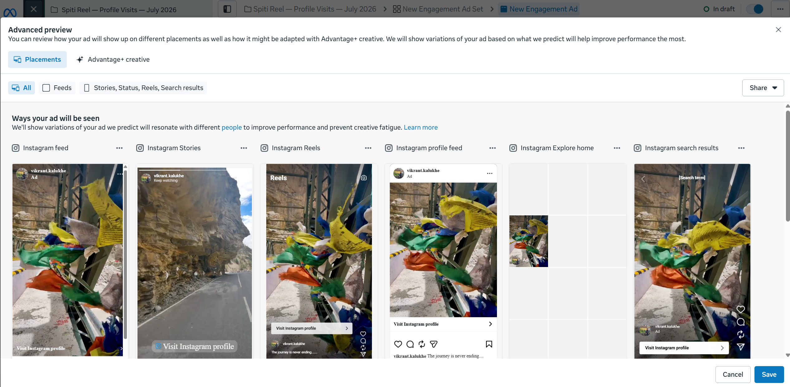
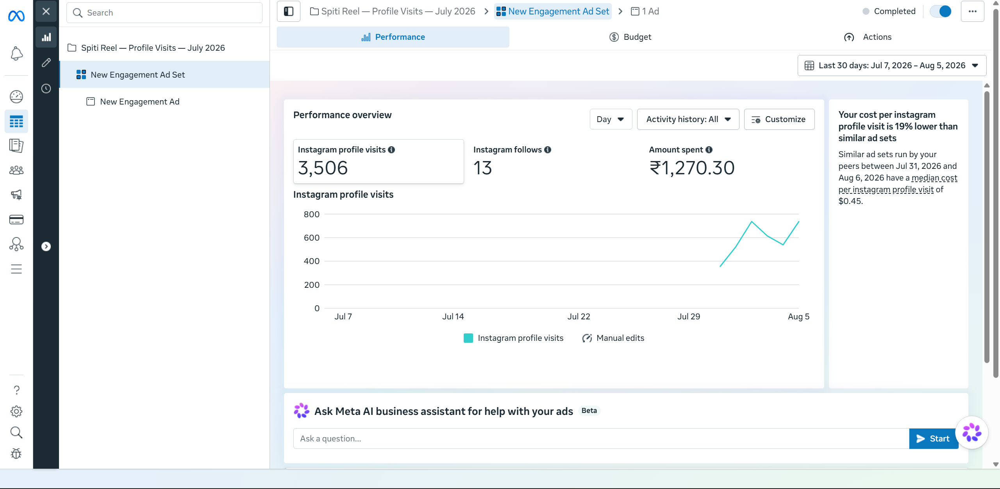
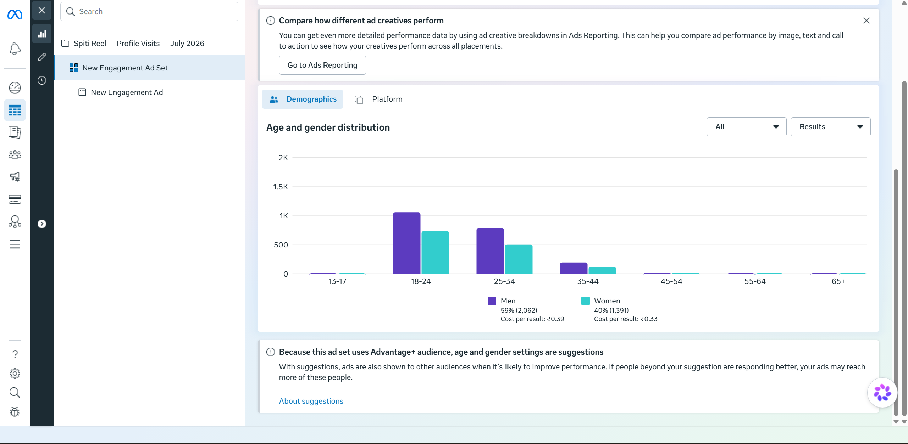
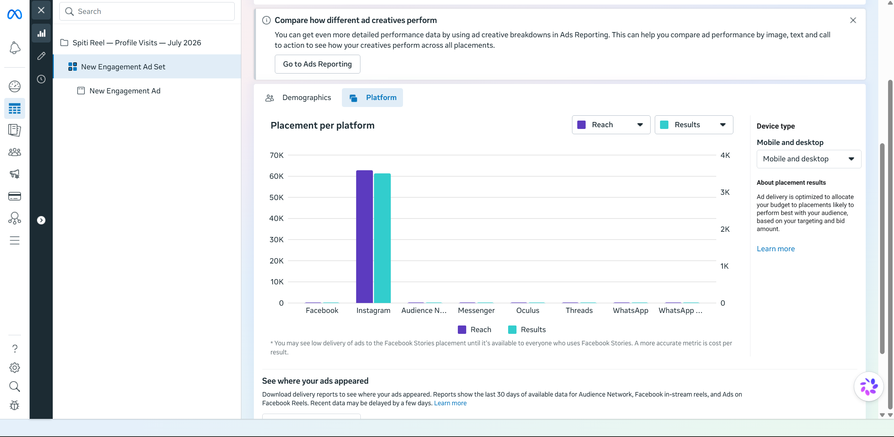

A self-funded engagement campaign through Meta Ads Manager. Real budget, real audience, real numbers. The first two studies on this site were academic. This one moved actual money and delivered profile visits at 19% below the cost of comparable ad sets.
A video built from my own photography and edit. No stock, no outsourced asset.
Objective, audience, budget and optimisation set up by hand. Not Boost.
This is the part most junior paid media applicants outsource. I did not. The ad below is my own photography and edit, built for the feed it ran in.

The hook worked. Delivering profile visits 19% cheaper than comparable ad sets tells me the opening frame and visual style earned attention in a crowded feed.
Pulled from Ads Manager. No estimates, no rounding up.



Running a campaign is easy. Knowing what the result means is the job. Here is what the data actually told me.